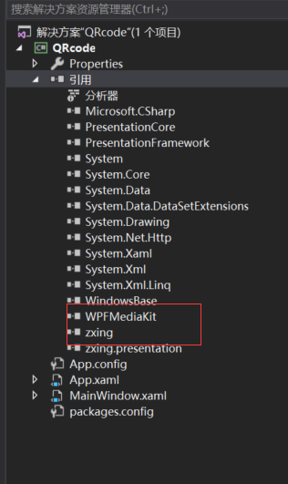

原文出处:本文由博客园博主begrateful提供。
原文连接:https://www.cnblogs.com/wendj/p/10789877.html
原文连接:https://www.cnblogs.com/wendj/p/10789877.html
第三方库：
WPFMediaKit.dll (WPFMediaKit摄像头处理)
zing.dll

NuGet安装这两个第三方dll
项目截图预览：

项目代码：
using System;
using System.Collections.Generic;
using System.Drawing;
using System.IO;
using System.Linq;
using System.Runtime.InteropServices;
using System.Text;
using System.Threading.Tasks;
using System.Windows;
using System.Windows.Controls;
using System.Windows.Data;
using System.Windows.Documents;
using System.Windows.Input;
using System.Windows.Media;
using System.Windows.Media.Imaging;
using System.Windows.Navigation;
using System.Windows.Shapes;
using System.Windows.Threading;
using WPFMediaKit.DirectShow.Controls;
using ZXing;
using ZXing.Common;
using ZXing.QrCode.Internal;
namespace QRcode
{
/// <summary>
/// MainWindow.xaml 的交互逻辑
/// </summary>
public partial class MainWindow : Window
{
/// <summary>
/// ZXING 二维码扫描类
/// </summary>
BarcodeReader codeReader = new BarcodeReader();
/// <summary>
/// 定时器
/// </summary>
DispatcherTimer cameraTimer = new DispatcherTimer();
public MainWindow()
{
InitializeComponent();
// 配置的摄像头名称
var camera = "Lenovo EasyCamera";
if (MultimediaUtil.VideoInputNames.Contains(camera))
{
//控件制定摄像头
vce.VideoCaptureSource = camera;
cameraTimer.IsEnabled = false;
cameraTimer.Interval = new TimeSpan(200); //执行间隔0.2秒
cameraTimer.Tick += cameraTimer_Tick;
}
}
/// <summary>
/// 计时器方法
/// </summary>
/// <param name="sender"></param>
/// <param name="e"></param>
private void cameraTimer_Tick(object sender, EventArgs e)
{
RenderTargetBitmap bmp = new RenderTargetBitmap((int)vce.ActualWidth, (int)vce.ActualHeight, 96, 96, PixelFormats.Default);
vce.Measure(vce.RenderSize);
vce.Arrange(new Rect(vce.RenderSize));
bmp.Render(vce);
BitmapEncoder encoder = new JpegBitmapEncoder();
encoder.Frames.Add(BitmapFrame.Create(bmp));
using (MemoryStream ms = new MemoryStream())
{
encoder.Save(ms);
Bitmap btiMap = new Bitmap(ms);
var result = codeReader.Decode(btiMap);//解析条码
if (result != null)
{
// 1:停止识别
cameraTimer.Stop();
vce.Play();
MessageBox.Show($"识别内容为：{result}");
}
}
}
private void BtnShiBie_Click(object sender, RoutedEventArgs e)
{
cameraTimer.Start();
}
private void BtnShnegCeng_Click(object sender, RoutedEventArgs e)
{
var codimg= Create("hello world!!");
imgQR.Source = ChangeBitmapToImageSource(codimg);
}
/// <summary>
/// 创建二维码
/// </summary>
/// <param name="msg">二维码中保存的信息</param>
/// <returns></returns>
public static Bitmap Create(string msg)
{
MultiFormatWriter writer = new MultiFormatWriter();
Dictionary<EncodeHintType, object> hint = new Dictionary<EncodeHintType, object>();
//设置二维码为utf-8编码
hint.Add(EncodeHintType.CHARACTER_SET, "utf-8");
//设置纠错等级， 高
hint.Add(EncodeHintType.ERROR_CORRECTION, ErrorCorrectionLevel.H);
BitMatrix bm = writer.encode(msg, BarcodeFormat.QR_CODE, 200, 120, hint);
BarcodeWriter barcodeWriter = new BarcodeWriter();
Bitmap bitmap = barcodeWriter.Write(bm);
string codePath = Directory.GetCurrentDirectory() + "/code.jpg";
if (File.Exists(codePath))
File.Delete(codePath);
bitmap.Save(codePath);
return bitmap;
}
/// <summary>
/// 从bitmap转换成ImageSource
/// </summary>
/// <param name="icon"></param>
/// <returns></returns>
public static ImageSource ChangeBitmapToImageSource(Bitmap bitmap)
{
IntPtr hBitmap = bitmap.GetHbitmap();
ImageSource wpfBitmap = System.Windows.Interop.Imaging.CreateBitmapSourceFromHBitmap(
hBitmap,
IntPtr.Zero,
Int32Rect.Empty,
BitmapSizeOptions.FromEmptyOptions());
if (!DeleteObject(hBitmap))
{
throw new System.ComponentModel.Win32Exception();
}
return wpfBitmap;
}
[DllImport("gdi32.dll", SetLastError = true)]
private static extern bool DeleteObject(IntPtr hObject);
}
}
项目源代码地址：https://download.csdn.net/download/qingchundaima/11151083